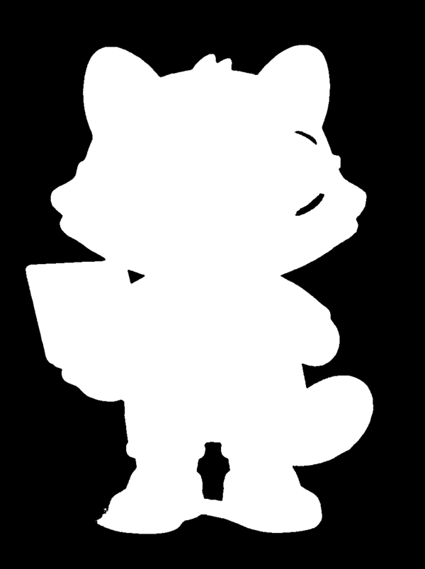
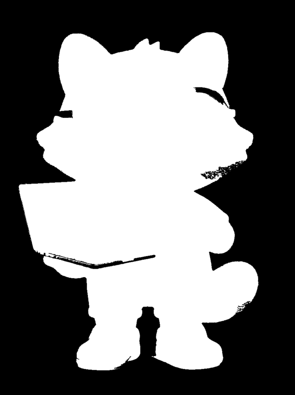
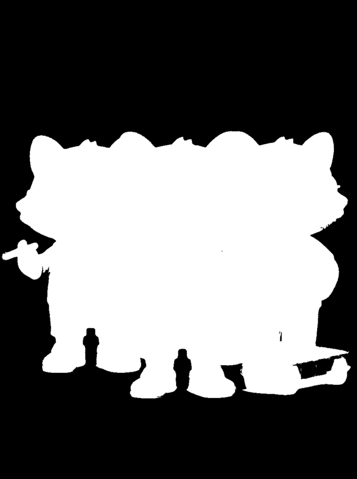
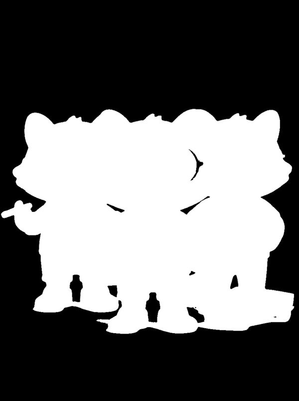

I want illustrations of my raccoon character with a transparent
background so I can drop them onto blog posts, newsletters, and
dark-themed slides without a white box around the raccoon. The AI image
generator I use can’t emit transparent PNGs directly.
The standard workaround is: render the raccoon on a solid
#FF00FF magenta background, then chroma-key that magenta out
locally. Easy — except that the naive
-fuzz 30% -transparent #FF00FF one-liner quietly produces
broken images, and the damage is invisible on a white preview. This page
is how I tuned the recipe.
What this is: a worked example of
eval-driven hill-climbing — iterating on a real image-processing
problem (pulling clean transparent backgrounds out of AI-generated
character art) by treating each magick incantation as a
“model”, the alpha mask it produces as the output, and a few
cheap numerical metrics as the fitness function. Six approaches, two
test images, one winning one-liner.
Repo:github.com/idvorkin-ai-tools/chroma-key-explainer
·
Harness:scripts/harness.sh
🏆 Winner — flood4 + tight 3%
269
total defect score — down from 17,385 for the
textbook one-liner. A 65× improvement in five
iterations.
Two-stage pipeline: flood-fill from the four corners (topology-aware
background removal that never touches interior pixels), then a
tight-fuzz chroma pass to clean up magenta pockets trapped between
characters:
TL;DR. If you chroma-key by eyeballing the result on a
white page, you will ship broken images. Magenta-tinted highlights inside
a character get eaten by aggressive fuzz, and interior pockets between
characters stay fully opaque — both invisible at a glance. You only
see the damage when you pull the alpha channel out as a grayscale
image and measure it. Once you have a fitness function
(holes, residual magenta,
edge fringe), the search is easy.
What are evals?
In the LLM world, an eval is a quantitative quality
metric run against a model’s output. Borrow that vocabulary here and
the pieces line up cleanly:
The “model” is whichever ImageMagick
recipe you’re currently trying.
The “output” is the resulting RGBA image
— specifically its alpha channel.
The eval scores are cheap pixel counts:
how many interior holes did the chroma eat?,
how much magenta did it miss?,
how fringed are the edges?
With those three numbers in hand, iterating is just hill-climbing: try a
variant, measure, keep the one that moves your metric in the right
direction, repeat. No visual judgment required at the inner loop.
Why do we need evals?
Because eyeballing fails silently. An image that looks cleanly
keyed on a light page can be riddled with defects your eye can’t see
— transparent pixels render as whatever’s behind them,
so holes in fur look like fur on a white background. Extracting the alpha
channel as a grayscale PNG is the ground truth; a perfectly keyed image has
a solid-white subject silhouette on solid black. Anything else is a
defect.
Here are the two test cases used throughout this page — a raccoon
character rendered by an AI image generator on its standard magenta
background. Same character, two compositions. They fail differently:
case-sparse: single SOLO raccooncase-dense: trio, packed tight
Case A — sparse: “looks fine” is a lie
Naive chroma-key on the sparse case looks completely clean on a light
background. The raccoon’s silhouette sits cleanly on white; nothing
jumps out. But pull the alpha channel and you see the damage: thousands of
interior holes where magenta-tinted highlights on the fur got killed by the
30% fuzz.
composite on white: looks clean

alpha mask: 7,698 interior holes
Without the alpha extraction, you’d ship this. Every hole becomes
a background-colored pinhole when the image gets composited onto some other
backdrop (a blog post, a dark theme, a newsletter template).
Case B — dense: a different failure mode
The dense composition fails two ways. Same fur-highlight holes as case A,
plus large interior pockets of magenta trapped between the
characters’ legs and bodies — fully opaque regions of
background-color that a plain -fuzz 30% -transparent kills
cleanly, but which leave huge black-fur-colored gaps when fuzz is
restrained to preserve interior highlights.
composite on white: looks cleanalpha mask: 9,687 interior holes
Crucially, the two cases don’t respond to the same fix. An
approach that aces case A (leaves the interior untouched) will fail case B
(leaves magenta pockets between characters), and vice-versa. Without evals
on both images, you’d tune on one and regress the other
without noticing. That’s the whole point: evals surface the failure
mode a single eyeball on a single image won’t.
The fitness function
The scoring pipeline is
scripts/eval.py,
~50 lines. Three pixel counts drive the search:
residual_magenta_px — opaque pixels still near
#FF00FF. Missed background.
interior_hole_px — transparent pixels enclosed by
opaque. Eaten interior. Computed with a connected-components scan: label
every transparent region, mark labels that touch the image border as
background, and whatever’s left are holes.
edge_fringe_px — partial-alpha pixels. Incomplete
edges. (Turned out to be zero across every attempt here, so it doesn’t
affect ranking.)
Combined into a single score:
score = residual × 5 + holes
— a pixel of pure magenta in your subject is obvious at a glance; a
single transparent pixel in fur isn’t. Weight residual 5× so
the optimum lands on "fully keyed" rather than "slightly pocked."
Two more metrics (opaque_px for subject-coverage sanity,
alpha_binarity_pct for how close the mask is to pure
black-and-white) are reported for regression-checking but don’t drive
the search.
The human doesn’t climb the hill — the agent does.
My job ended at "here are the three numbers that measure success, and
here’s how to weight them." From that point on, the coding agent
ran the harness, read the evals, proposed the next recipe, ran it, and
scored it — on loop until the climb plateaued. That’s the
whole payoff of eval-driven work: once the fitness function is sharp,
the inner loop is no longer a human loop. I looked at the final result
and spot-checked the regressions; the agent did the search.
The hill-climb
Each row of the table below is one attempt, in the order they were
tried. Read top-to-bottom to see each step’s delta against the
running best — that’s the hill-climb made visible. Green
means we moved uphill; grey is a plateau; red is a step off the ridge.
Zero residual, but 17k interior holes. Fuzz eats magenta-tinted fur highlights.
2
flood4
Flood-fill from the four image corners only. Interior pixels can’t be reached, so they survive.
0
660
660
↓ 16,725 · new best
Topology solved. 132 residual magenta in dense — pockets trapped between bodies.
3
flood4 + tight 3% 🏆
Add a second chroma pass at -fuzz 3% to clean the trapped pockets without eating fur.
0
269
269
↓ 391 · new best
Residual 132 → 37 on dense, at a cost of 84 new holes. Sweet spot.
4
flood4 + tight 5%
Same pipeline, nudge the knob up: -fuzz 5%.
0
270
270
+1 · tied (trade flipped)
Residual → 0 but holes 84 → 270. Same total, different failure mix.
5
flood4 + tight 10%
Keep pushing: -fuzz 10%. Does the trade keep breaking even?
249
1,077
1,326
↑ 1,057 · worse
Over the ridge. Sparse regresses (highlights eaten); dense jumps 4×. Past the optimum on the fuzz axis.
6
cc_border
Structural change: binarise to a magenta/non-magenta mask first, then flood-fill the mask from corners.
7,698
9,686
17,384
↑ 17,115 · regression to baseline
Fails identically to plain. Different machinery, same failure mode.
The callback that closes the story.cc_border’s failure mode is the reason our
interior-hole metric works. Once a magenta-tinted highlight becomes
“magenta” in a binary mask, corner-flood can reach it through
thin connecting pixels — which is exactly how eval.py
labels holes (“transparent but border-reachable” means it was
never really interior). Operating on the original RGBA (flood4)
preserves the pixel gradients that keep interior highlights unreachable.
Same topology, same trap, applied in opposite directions.
Key findings
Evals exist to expose invisible defects. Plain
chroma on a white page looks perfect; the alpha mask reveals 17k holes.
Any hill-climb is doomed if you can’t see the damage.
Structural fixes dominate parameter sweeps. The
jump from plain (17k) to flood4 (660) was a
26× gain from one topology change. The entire fuzz sweep
3% → 10% only moved the score across a much narrower
band. Fix the mountain before tuning the knob.
Sweep the knob anyway — it’s cheap.
Trying 3/5/10% took three harness runs and revealed the optimum plus
the cliff. Picking 3% by eye would have missed that 5% was essentially
tied and 10% was a cliff-dive.
Structural detours keep you honest.cc_border didn’t win, but the fact that it
regressed back to baseline confirmed the flood-fill-on-RGBA step was
load-bearing, not decorative.
Score both test cases, not one. Every approach
that aced sparse had to be re-checked against dense, and vice-versa.
Without case-dense, the sweep would have picked the wrong winner.
Per-attempt deep dives
Each card below has the exact command, per-case eval row, and four-up
comparison (composite-on-white plus alpha mask for both test cases).
The textbook one-liner. 30% fuzz because AI-generator output is never
pure #FF00FF — there’s colour bleed near edges,
JPEG/WebP noise, and anti-aliasing. Zero fuzz leaves a halo.
case
holes
residual
fringe
score
sparse
7,698
0
0
7,698
dense
9,687
0
0
9,687
sparse / on whitedense / on whitesparse / alphadense / alpha
What the eval says: zero residual
magenta (aggressive fuzz killed every bg pixel) but 7.7k–9.7k
interior holes. The same fuzz tolerance that removes the background also
removes any magenta-tinted pixel inside the subject.
Next: stop chroma-keying interior pixels at all. Only
remove background that’s actually connected to the image edge.
Topological fix: use flood-fill from the corners to mark only
reachable magenta as background. Interior magenta-tinted pixels
can’t be reached through a wall of opaque fur, so they survive.
sparse
0
0
0
0
dense
0
132
0
660
sparse / on whitedense / on white

sparse / alphadense / alpha
What the eval says: holes go to zero
on both cases — topology solved. But dense now has 132 residual
magenta pixels: interior pockets of background trapped between the three
bodies. Flood-fill can’t reach them from the corners because the
characters form a closed ring.
Next: clean up those interior pockets with a second,
tight chroma pass — low fuzz so it kills pure magenta but
not tinted fur.
After flood4, apply a second chroma pass with a very tight fuzz
tolerance. 3% is small enough to leave tinted pixels alone.
sparse
0
0
0
0
dense
84
37
0
269
sparse / on whitedense / on whitesparse / alpha

dense / alpha
What the eval says: residual magenta
drops from 132 → 37 on dense, at the cost of 84 new
interior holes (tight pass caught a few almost-pure magenta highlight
pixels). Best residual×5 + holes score so
far: 269 on dense, 0 on sparse.
Next: nudge the tight fuzz up to see if we can drive
residual to zero without paying too much in holes.
sparse / on whitedense / on whitesparse / alphadense / alpha
What the eval says: residual goes to
zero, but holes jump to 270. Score: 270 on dense — very close to
tight-3%, with the trade-off flipped.
Next: push harder, see if the trade keeps being
roughly even or whether the hole cost explodes.
sparse / on whitedense / on whitesparse / alphadense / alpha
What the eval says: the hole cost
explodes. Sparse regresses from 0 to 249 (magenta-tinted highlights
inside the solo raccoon now get eaten); dense jumps to 1,077. We’ve
gone past the optimum on the fuzz axis.
Next: try something structurally different —
connected-components on a binarised magenta mask — to see if a
different representation avoids the fuzz/hole trade-off entirely.
6. cc_border — structural detour, dead end
# Binarise magenta, then keep only the components touching the image edge.
magick input.webp -fuzz 30% -fill white +opaque "#FF00FF" -fill black -opaque white mask.png
magick mask.png -fuzz 10% -fill red \
-draw "color 0,0 floodfill" -draw "color W-1,0 floodfill" \
-draw "color 0,H-1 floodfill" -draw "color W-1,H-1 floodfill" \
-channel R -separate -threshold 50% -negate alpha.png
magick input.webp alpha.png -compose CopyOpacity -composite out.webp
Structurally different approach: first reduce the image to a binary
magenta/non-magenta mask, then flood-fill the mask from the
corners. The resulting alpha is applied to the original image.
sparse
7,698
0
0
7,698
dense
9,686
0
0
9,686
sparse / on whitedense / on whitesparse / alpha

dense / alpha
What the eval says: essentially
identical to plain. The binarisation step loses the same
interior highlight pixels that plain’s aggressive fuzz did —
they flip to “magenta” in the binary mask and then get
labelled as background because the border-fill can reach them through
thin connecting pixels. More machinery, same failure mode.
Verdict: stop. The flood-fill-on-the-original-RGBA
approach (not on a binarised mask) is what does the real work.
flood4 + tight 3% is the winner.
Reproducibility
git clone https://github.com/idvorkin-ai-tools/chroma-key-explainer.git
cd chroma-key-explainer
./scripts/harness.sh # requires `magick` and `uv` on PATH
# writes results/<image>/<approach>.webp + -alpha.png + metrics.json
The eval.py
script uses PEP 723 inline deps and runs under uv with no
pre-installation step.
The winning recipe is codified as a reusable step in the blog’s
gen-image skill
so every AI-generated character illustration goes through the same
verified pipeline — and the skill now runs eval.py
automatically at the end of every generation. Each image ships
with a metrics card (residual, holes, fringe); if a future model update
or prompt tweak regresses any of those numbers, the deviation is flagged
on the spot instead of being discovered weeks later when someone notices
pinholes in a dark-mode render. The hill-climb proved the recipe once;
the auto-eval keeps it honest every time.